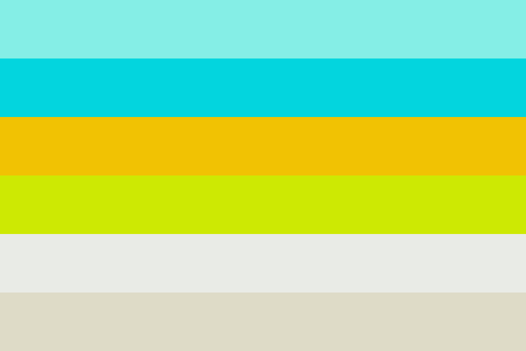
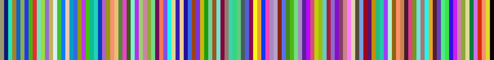

MM3 - Interstellar Pride
The Interstellar Pride Community uses the following flag for identification purposes.

The flag has a hidden message using colour coding. However, a shift and scaling (with primes) is applied to brighten the colours a bit.
The following is an unshifted, unscaled message for you to practice on.
As you can see, the colours are quite dim and need to be brightened.
Recently, they have been using a new, more logical, method.
Instead of shifting and scaling the original message, they apply a bit-encoding suitable to the RGB structure.
Decode the following message to move on...
